I've been sitting on these photos for a few days. I'm sorry for not posting them sooner!
The squirrel feeder is the MOST FUN EVER1!!!!! I'm gonna have one of these in my yard someday. My tree rodents will be MASSIVE.
Our most common visitor was the gray squirrel. He's pretty cute! He likes to eat upside down.
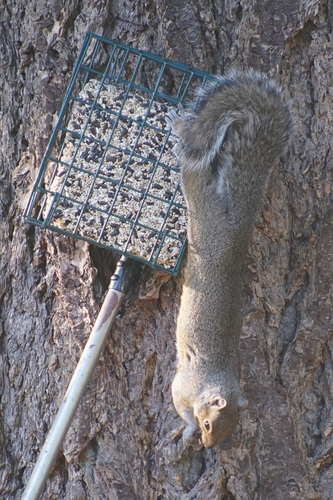 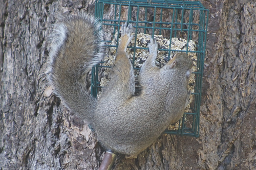Our next visitor is the Douglas squirrel. He's small and feisty! He chases off gray squirrels and birds that approach his feeder. He let me get closest for photos.
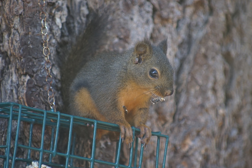 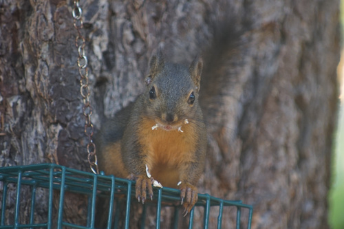 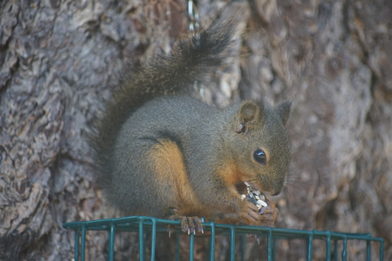 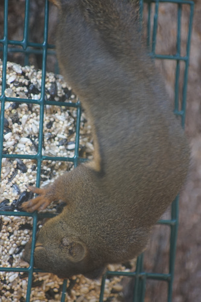 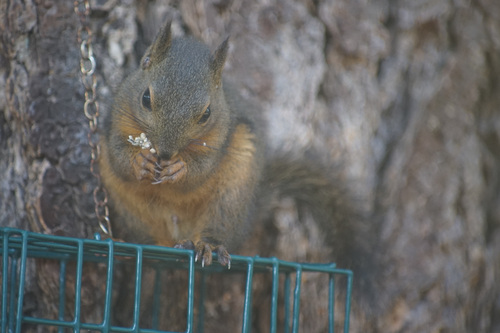Our unexpected visitor is the chipmunk! He's pretty timid, but he can hide under the leaves from the Douglas squirrel and sneak a bite from the ground.
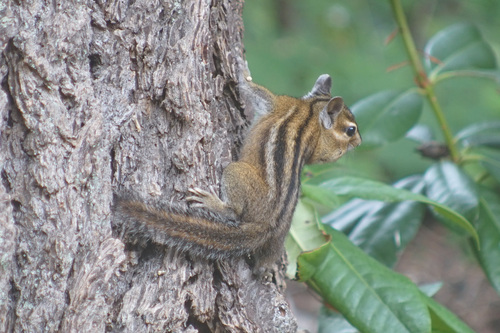 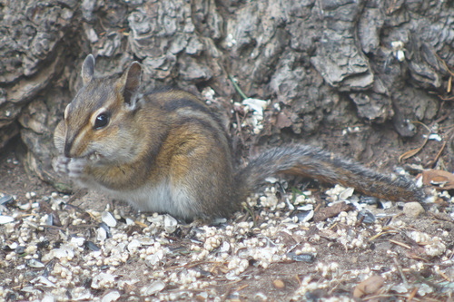 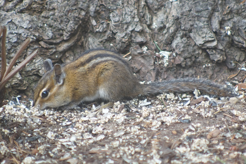 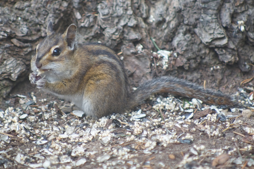 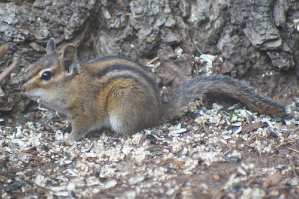 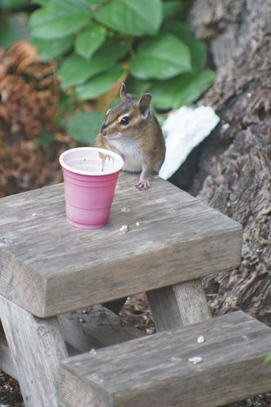Dear Bunny and Hummy, Hope you are fine.
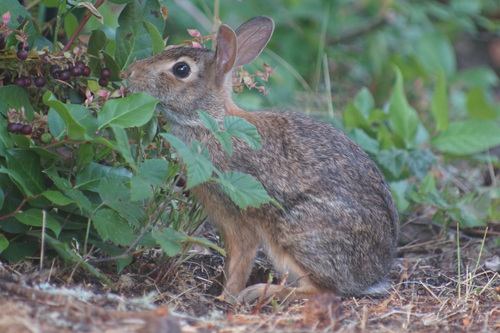 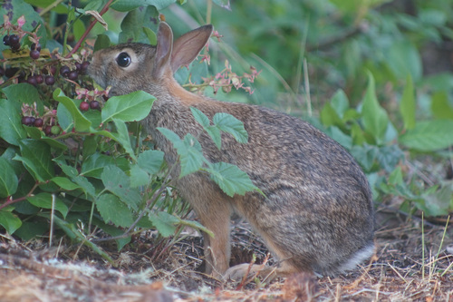 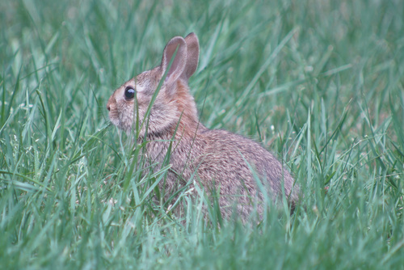 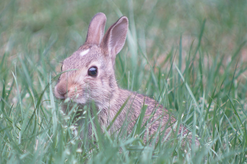 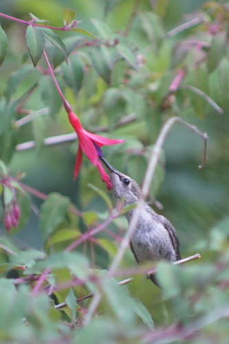 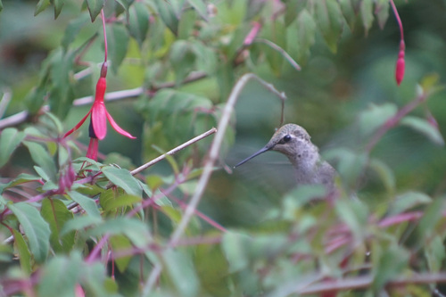Omake!
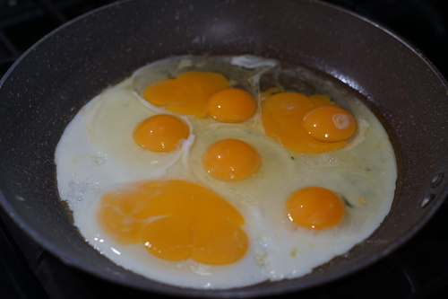I cracked 3 lucky eggs for breakfast!! I can't believe my incredible luck! Sorry I cracked one of each double yolk. You'll just have to trust me if you don't believe what you see.